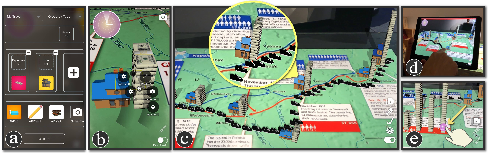
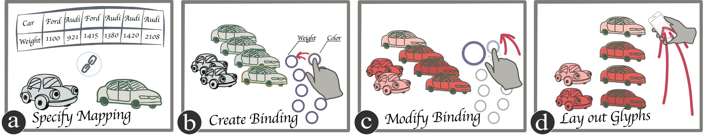
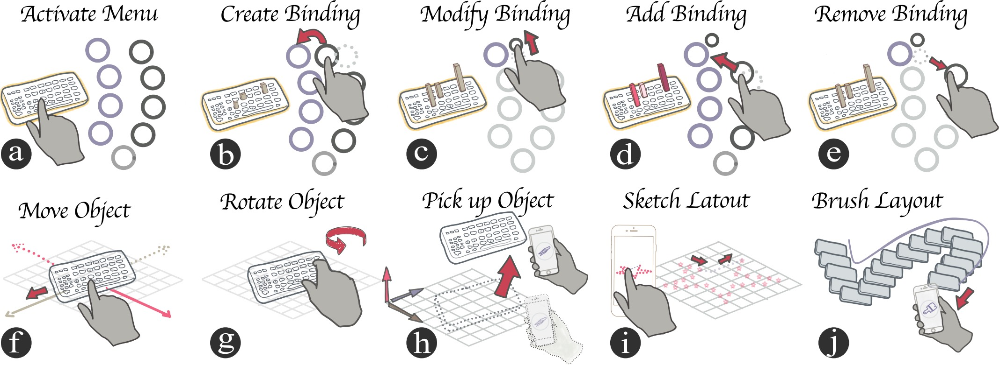
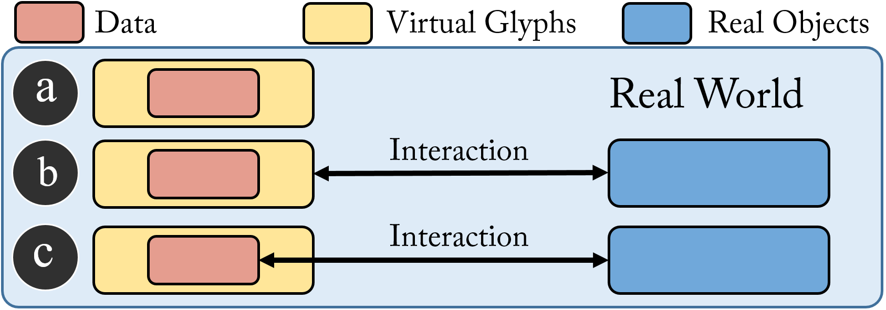
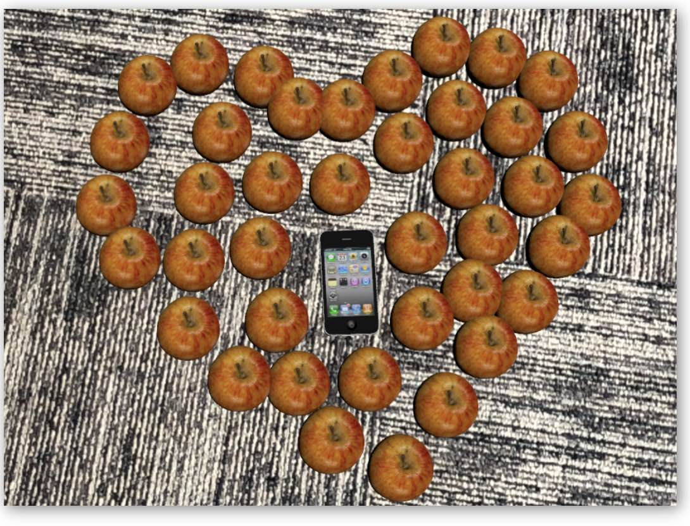
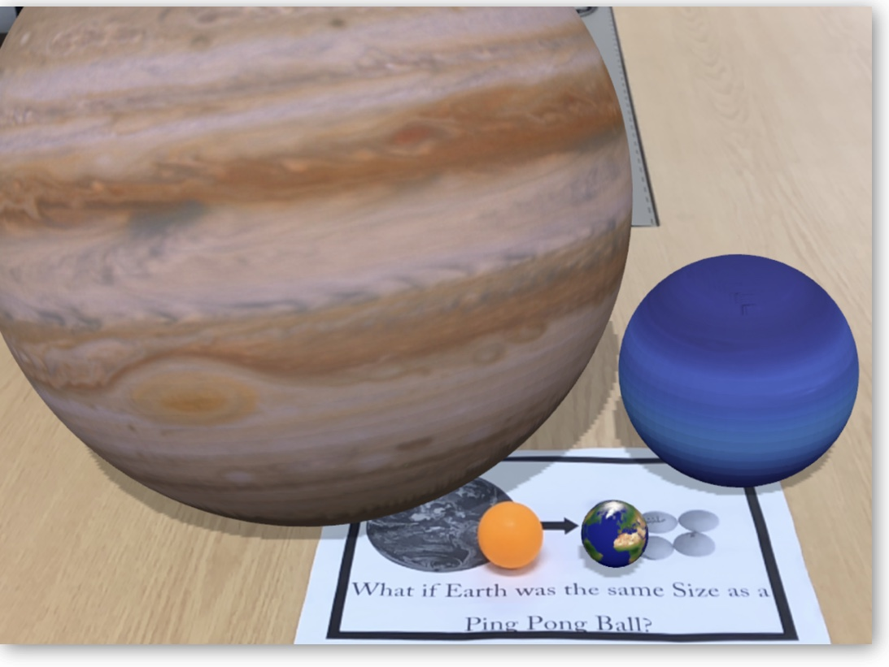
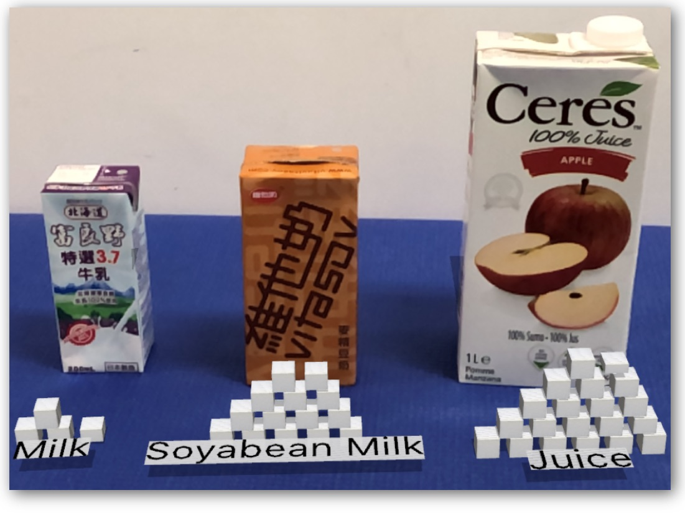
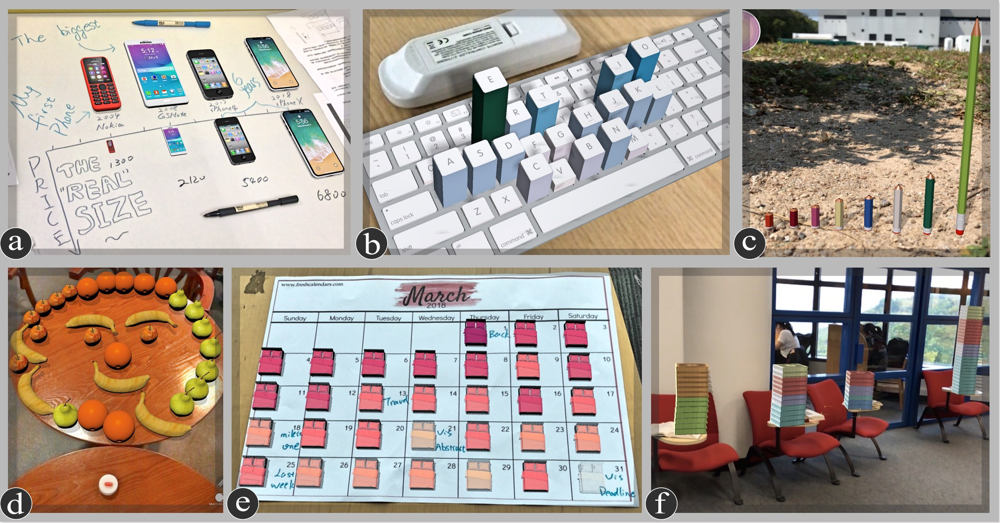

Recent advances in mobile augmented reality (AR) techniques have shed new light on personal visualization for their
advantages of fitting visualization within personal routines, situating visualization in a real-world context, and arousing users’ interests.
However, enabling non-experts to create data visualization in mobile AR environments is challenging given the lack of tools that allow
in-situ design while supporting the binding of data to AR content. Most existing AR authoring tools require working on personal computers
or manually creating each virtual object and modifying its visual attributes. We systematically study this issue by identifying the specificity
of AR glyph-based visualization authoring tool and distill four design considerations. Following these design considerations, we design
and implement MARVisT, a mobile authoring tool that leverages information from reality to assist non-experts in addressing relationships
between data and virtual glyphs, real objects and virtual glyphs, and real objects and data. With MARVisT, users without visualization
expertise can bind data to real-world objects to create expressive AR glyph-based visualizations rapidly and effortlessly, reshaping the
representation of the real world with data. We use several examples to demonstrate the expressiveness of MARVisT. A user study with
non-experts is also conducted to evaluate the authoring experience of MARVisT.
Video & Usage Scenario
To demonstrate the basic workflow of MARVisT, we describe how Bob, a hypothetical travel and history enthusiast, create an AR glyph-based infographic in a mesume.

Figure 5. a) The UI for mapping data points to virtual glyphs. b) The UI for visual mapping. The height of hotels and money stacks represents the cost.
The color of houses denotes the rank of hotels. Users can further switch different interaction modes using the buttons in the bottom-right corner. c)
The ARGVis blends the designer’s routes (shoes), hotels (houses), and daily expenses (money stacks) data with a real-world infographic map. d) The
Layout Sketch allows users to lay out numerous objects efficiently. e) The Copy Layout method objectifies layouts of collections as small beads.
Design of MARVisT
1. Basic pipeline and interactions.
To incorporate DC1. Balance the Expressivity and Simplicity, we design F1. a pipeline based on a bottom-up construction strategy and a set of intuitive interactions.

Figure 6. A basic pipeline to create glyph-based visualizations. a) Specifying the mapping from data points to virtual
glyphs. b) Creating visual mappings through direct manipulations. c) Modifying the scale of visual mappings through one hand operations. d) Laying
out virtual glyphs through intuitive and effective interactions.

Figure 7.
MARVisT provides intuitive interactions that allow users to
a) - e) directly manipulate the data bindings through one-hand operations
and f) - j) lay out single or multiple virtual glyphs in both 2D and 3D space efficiently..
2. Three advanced features to leverage for the three relationships between reality and virtuality.

Figure 4. The relationship between reality and virtuality can be a) weak, b)
medium, and c) strong.
Weak

In the Weak relationship, the reality only provides a situation background and does not interact with the virtuality directly.DC2. Aid Visual Mapping with Context Information.F2. Context-aware Nudging.Medium

In the Medium Relationship, real objects, which serve as references, such as the container or the anchor, are visually related to the 3D virtual glyphsDC3. Enable Visual Scale Synchronization between Real
Objects and Virtual Glyphs.F3. Visual Scales Synchronization.Strong

In the Strong Relationship, real objects are associated with the data (represented by 3D glyphs) as physical referents.DC4. Support Auto-layout of Virtual Glyphs.F4. Virtual Glyphs Auto-layout
Examples

Figure 10. Examples created with MARVisT.
a) An isotype chart combines the reality (the sketching on the whiteboard) and the virtual glyphs (the eight mobile phones). The four mobile phones in the second row visualize their price using the size channel.
b) Michael Knuepfel’s keyboard frequency sculpture recreated and enhanced using MARVisT. Both the color and height channels are used for double encoding.
c) Moodley brand identity’s physical infographics recreated by MARVisT using color and height to encode various data attributes.
d) A smiling face created using the Layout Sketch method. The face consists of fruits the designer eat in a week.
e) A calendar visualization created using the auto-layout method. The design displays the sleep duration per night in the March 2018 using the color and opacity for double encoding.
f) A stacked glyph chart created using the Layout Brush and the automatically stacking function. It depicts the designer’s favorite seat in the library. Color represents the day of the week.